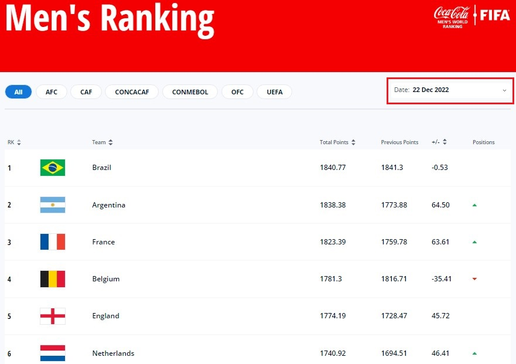
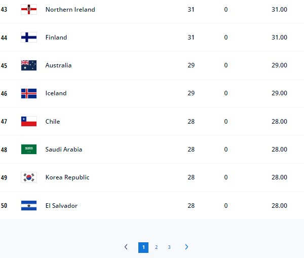
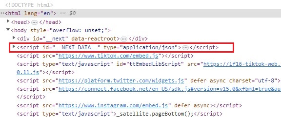
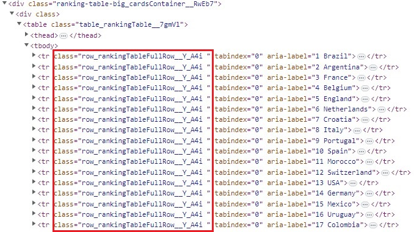
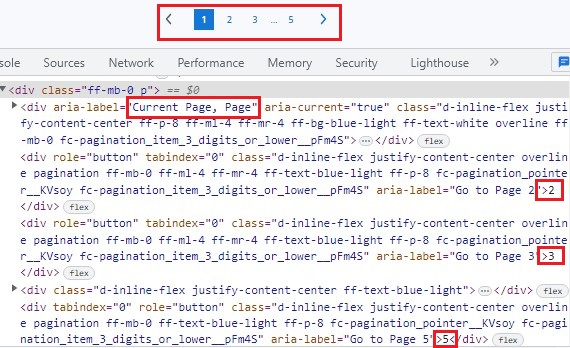
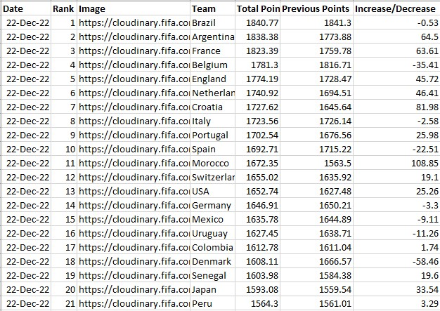
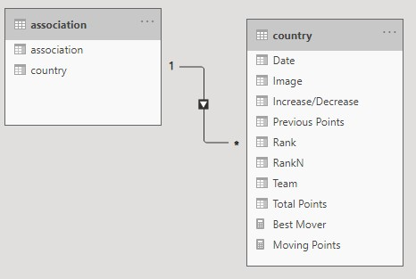

Scraping and visualizing FIFA men's world ranking data
1. Background:
I just recently took a look at some of my old code on web scrapping but then think about to code the new one to refresh myself. Football is one of my favourite areas so I decided to explore the FIFA ranks of different countries throughout the history. The world ranking can be seen from the FIFA website but, unfortunately, there is no API to download this data so this project aims to scrap directly from the website. This activity is simply for coding and visualizing practice, and not for any commercial purposes.
2. Dataset Introduction:
2.1 The structure of FIFA website
The ranking data for men national football teams was tracked from 31 Dec 1992 up to the current date 22 Dec 2022. For each ranking period, the top 50 teams are shown in the first page, and the following 50 teams will be shown when users click on the next paginated page. There are about more than 200 teams for each ranking period.
Example of FIFA men's ranking
 The URLs for current ranking pages follow the rules below:{kind=link}
- 22 Dec 2022: https://www.fifa.com/fifa-world-ranking/men?dateId=id13869
- 06 Oct 2022: https://www.fifa.com/fifa-world-ranking/men?dateId=id13792
- ...
- 17 Jan 2007: https://www.fifa.com/fifa-world-ranking/men?dateId=id152
- 18 Dec 2006: https://www.fifa.com/fifa-world-ranking/men?dateId=id151
- ...
- 31 Dec 1992: https://www.fifa.com/fifa-world-ranking/men?dateId=id1
It is clearly noticed that the pattern for URLs is "https://www.fifa.com/fifa-world-ranking/men?dateId=" + the id number. The number started from 1 in 31 Dec 1992 to 152 in 17 Jan 2007, then it is randomly picked up. There is no rule to format the id numbers from recent ranking periods. At the end of each page, there are links to the next ranking teams.
{kind=link}
The structure of this HTML document seems to be right at the time of my work but might be changed in the future by FIFA, so the rules to check for ranking periods, teams, paginated pages etc. may need to be revised.
3. Data scraping with Python
Selenium Python package is used to automate and interact with web browser to scrap data. Power BI is used for data visualization. The source code can be found in the Github repo below.
3.1 Scraping process
- Retrieve the id numbers for all ranking periods
- Refresh the current page with current ranking period
- For each ranking period, navigate for all paginated pages to get all teams' information
- Update into the main dataset
3.2 Analysis of the HTML structure
The ranking periods with id numbers are setup in the JSON format (key value) and embedded in the script tag with id of "__NEXT_DATA__". This can be done using webdriver (Selenium) find_element method with this id.
Example of script tag to store ranking periods
{kind=link}
Teams information can be retrieved from the HTML table row with class "row_rankingTableFullRow__Y_A4i". This can be done by using webdriver (Selenium) find_element method with this CSS selector.
Example of teams information in HTML
{kind=link}
To navigate to other paginated pages within current rangking period, this project attempts to look up a section near the bottom of the webpage. This can be done using the webdriver (Selenium) method find_element but now with the XPATH parameter. The reason because this HTML div section is nested from other div tags and it is quite complicated to lookup by CSS or ID. The XPATH of this HTML div element can be retrieved easily in Chrome by right click the tag and copy.
Example of paginated pages in HTML
{kind=link}
Example of scraped dataset in csv
{kind=link}
3.3 Scraping data with concurrency or multi-threading
Basic scraping in Python is pretty easy and simple but it can be time-consuming. There are many ways to enable the scrapping data with concurrency, and this project suggests to use the custom class to create instances representing thread workers.
4. Data Visualization
4.1 Data preparation
Example of data relationship
{kind=link}
To be updated.